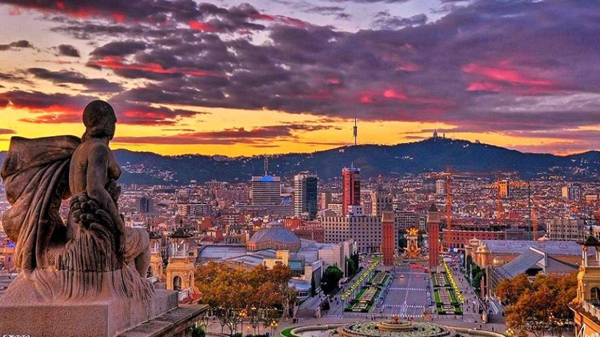
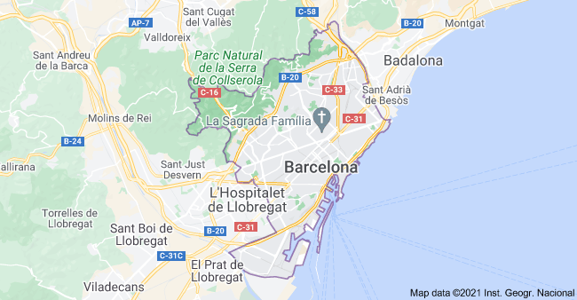
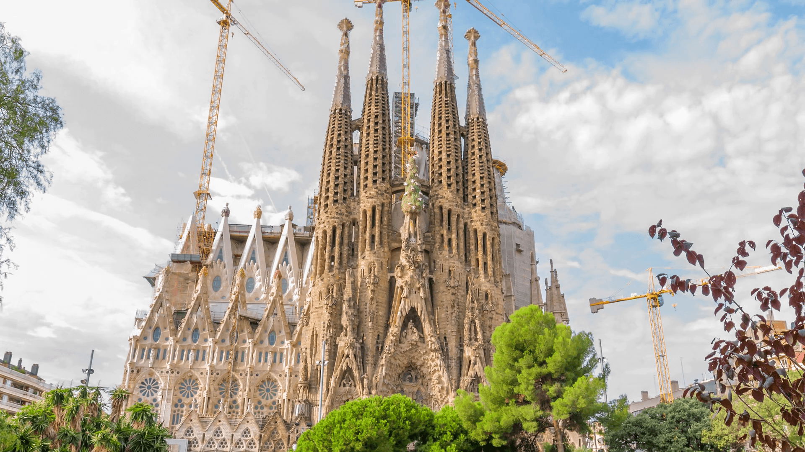
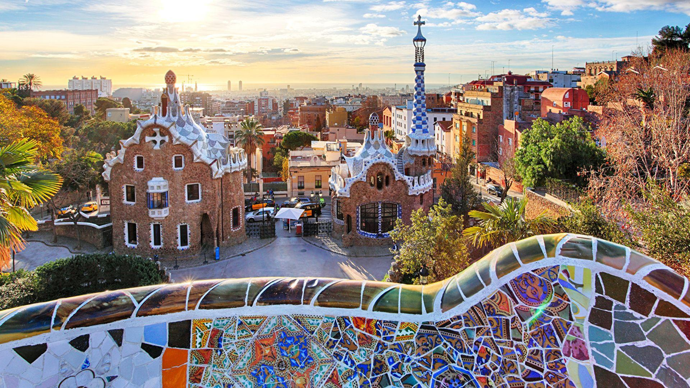
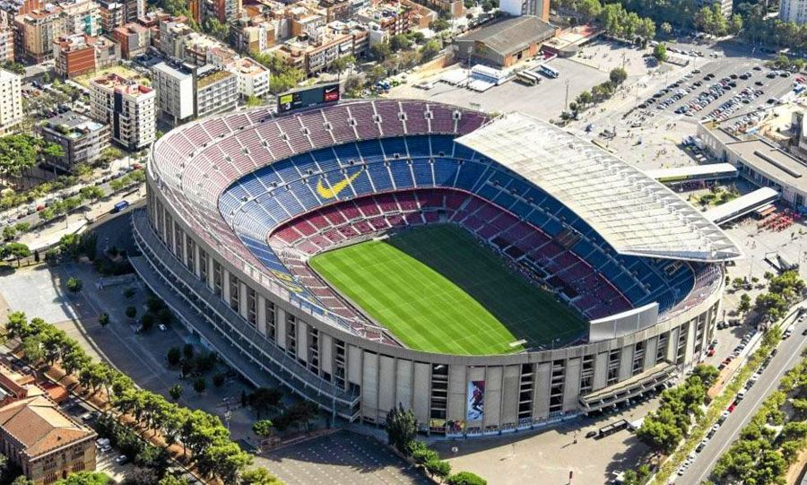
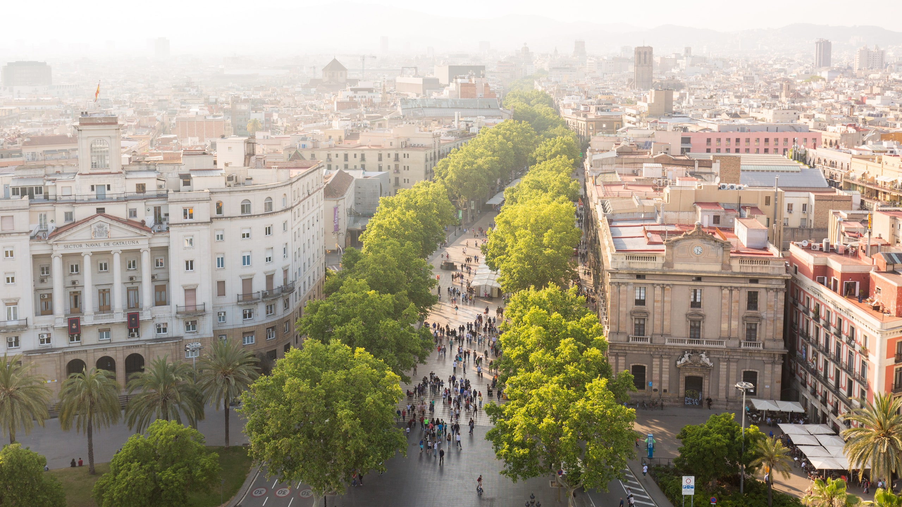
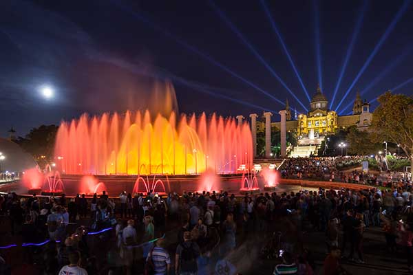
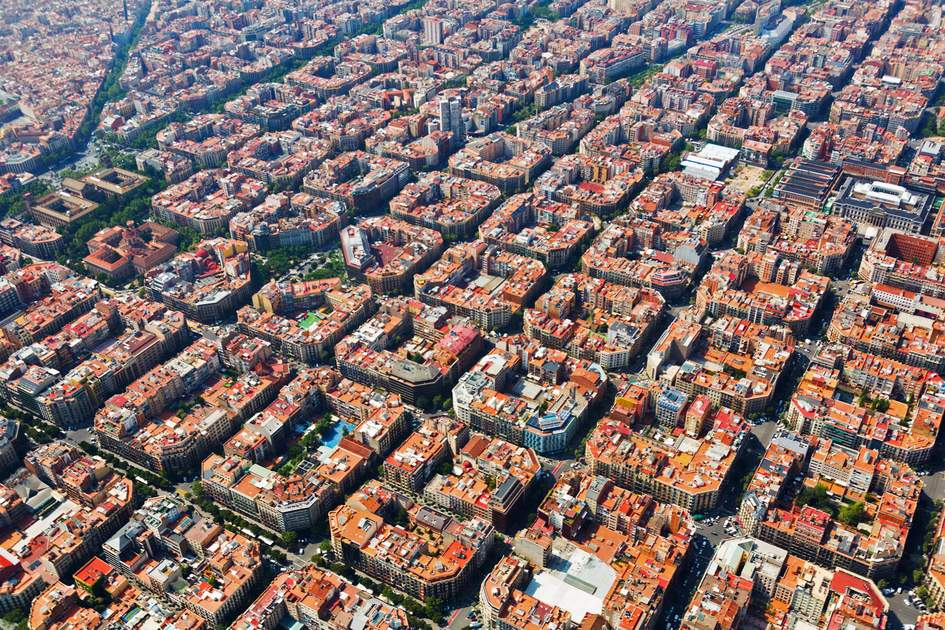
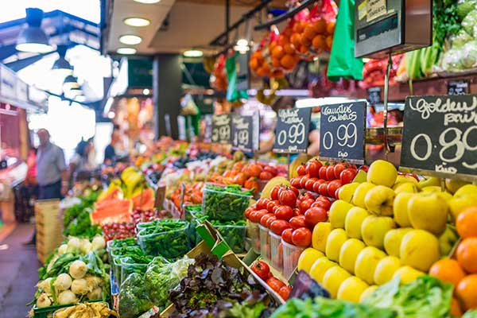
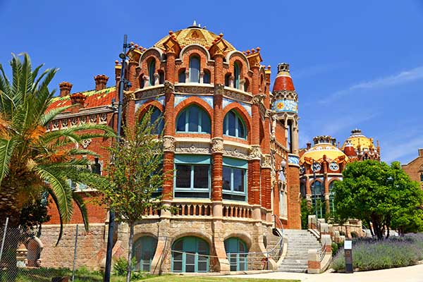

Barcelona
The Place I Want to Travel
geography

Map of Barcelona
City on the coast of northeastern Spain
Has a population of over 1.6 millions
It has 10 districts
The elivation(height above sea level) is 12 meter
Short summer and long winter
60 miles of coastline
Sagrada Familia

Sagrada Familia
The absolute No.1 attraction in Barcelona
The unfinished church
The construction started in August 25th 1883 and will probably complete in 2026
Park Güell

Park Güell
The famous park in Barcelona
One of Spain's most popular tourist attraction
0-6 years:free entry
adult : 13.5€
Camp Nou

Camp Nou Stadium of FC Barcelona
You can visit Camp Nou stadium
Take the Camp Nou Experience tour and see the dressing rooms, trophies, and all the parts of the stadium, or attend one of Barca's matches.
Las Ramblas

Las Ramblas
Las Ramblas is the busiest street in Barcelona with its flower stalls, plane trees, street musicians, and living statues.
It's the most touristy place in the city and the spot to get souvenirs.
Parc de Montijuïc & Magic Fountain

Parc de Montijuïc & Magic Fountain
The Montijuïc is the most famous mountain of the city
Beautiful fountain show of water and light
Palau de la Música Catalana
Palau de la Música Catalana
The most beautiful concert building in the world
construction started in 1905 and completed in 1908
0-11 years:free entry
adult : 10€
Eixample

Aerial view of Eixample district
A district of Barcelona
Most famous streets and squares in Barcelona
Bopueria Market

Bopueria Market
The Bopueria Market is the colorful market on the Las Ramblas street
The perfect place to start the day by tasting and experiencing Catalan flavours and smells
Hospital de Sant Pau

Hospital de Sant Pau
Old hospital
Unique landmark of Barcelona
One of the prime example of Catalan modernist architecture
Thank you
Obama saying "Thank You"
Thank you